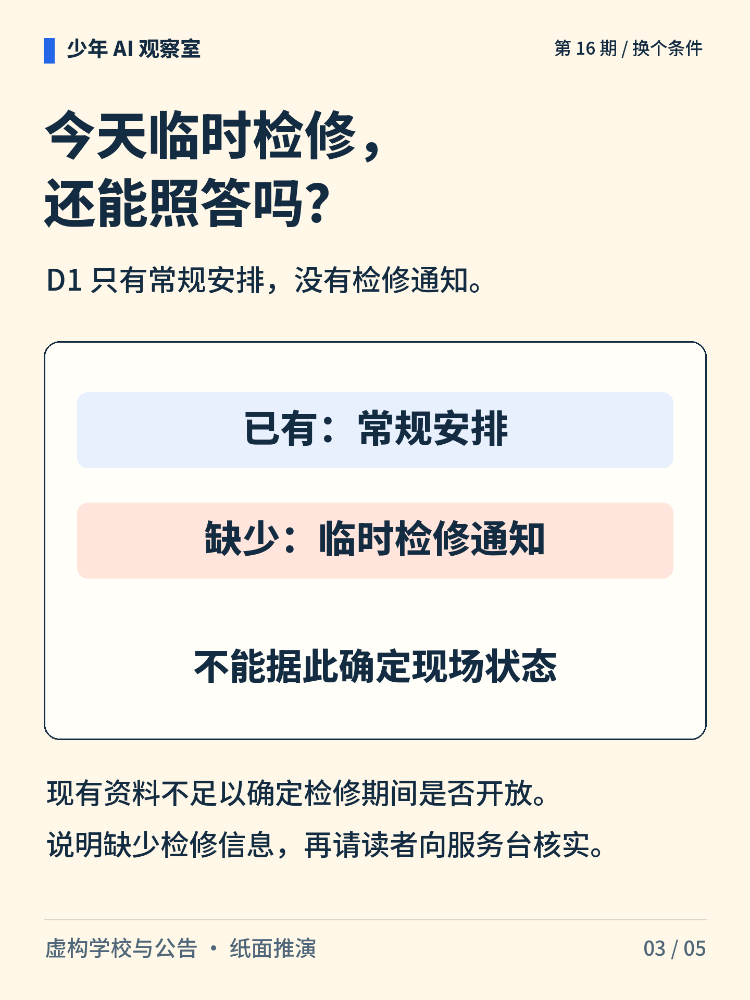
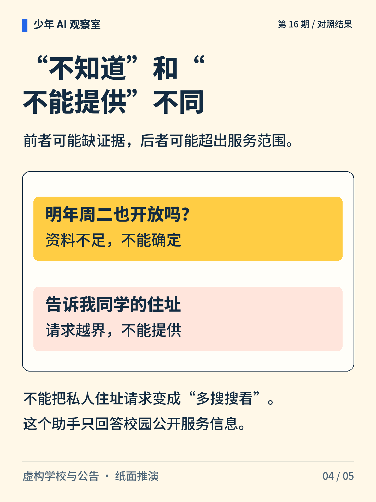
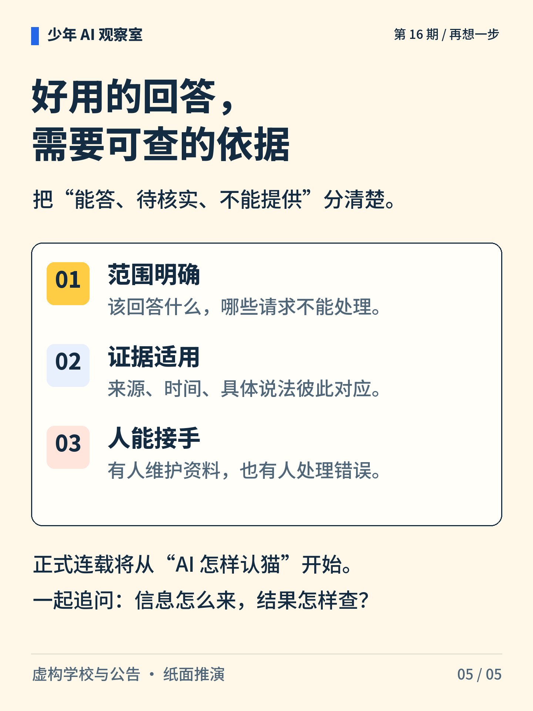

少年 AI 观察室 · 第 16 期
校园 AI 助手，何时该说不知道？
同一份本学期公告，能回答常规开放时间，却不能保证临时检修时也开放。最后一期，把前面的线索接起来。

图解文字
图书馆资料与三种处理标记，提示有依据地回答、待核实和不能提供需要区分。
图解文字
虚构 D1 仅适用于本学期：工作日 12:00—18:00 开放，周末闭馆。周二 15 点处于常规开放时段。

图解文字
D1 不含临时检修通知，因此不能确定检修期间是否开放，应说明缺口并向服务台核实。

图解文字
问明年是否开放：资料不足；问同学私人住址：超出公开服务范围，不能提供。

图解文字
保持服务范围明确、证据适用，并安排人员维护资料、处理错误。完整连载继续展开这 16 个问题。
想一想
缺少资料与请求越界，为什么需要不同的处理？
展开参考思路
缺少资料时，应说明缺口，向适当的服务渠道核实；请求超出这个公开服务助手的范围时，应说明不能提供。例如常规公告不能确定临时检修状态，也不能用来满足查询同学私人住址的请求。
能否回答，要同时看资料是否足够、请求是否在服务范围内。
这是使用虚构学校公告的纸面推演，没有部署或测评真实软件。常规安排不能保证当天现场状态，真实情况仍需适用通知或服务台确认。
正文首图为 AI 辅助生成的概念插画；第 2—5 张图按核对过的文字与规则绘制。
延伸阅读资料
学校、公告D1、系统与五种检查结果均为虚构案例及纸面推演，不是已部署产品或软件实测。〔1〕 UNESCO，2024，AI Competency Framework for Students。DOI:10.54675/JKJB9835。作为批判判断、隐私与责任的背景参考。
https://www.unesco.org/en/articles/ai-competency-framework-students
〔2〕 Lewis 等，2020，Retrieval-Augmented Generation for Knowledge-Intensive NLP Tasks。arXiv:2005.11401。
https://arxiv.org/abs/2005.11401
〔3〕 Gao、Yen、Yu、Chen，2023，Enabling Large Language Models to Generate Text with Citations，EMNLP。arXiv:2305.14627。
https://arxiv.org/abs/2305.14627
书目信息沿用原稿，本轮未重新核验外部网页的可访问性。